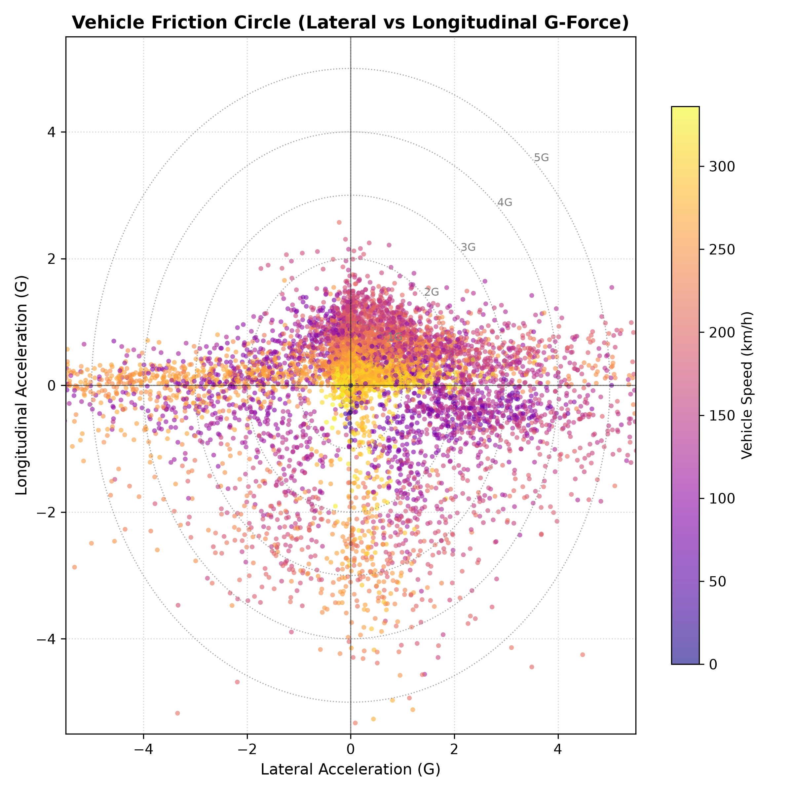
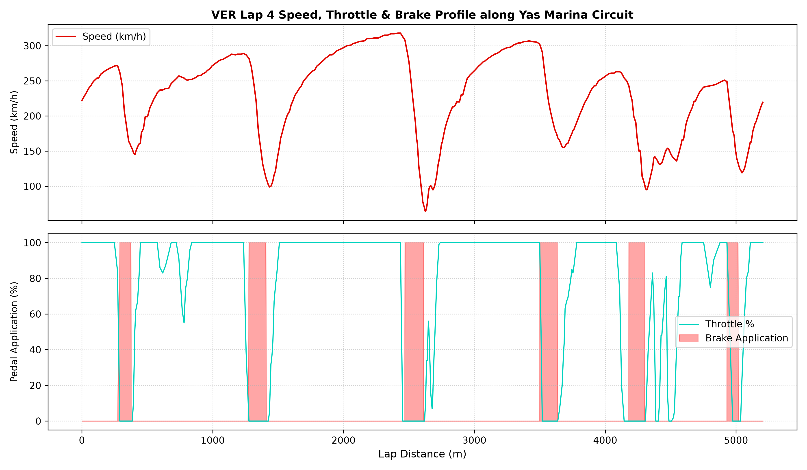
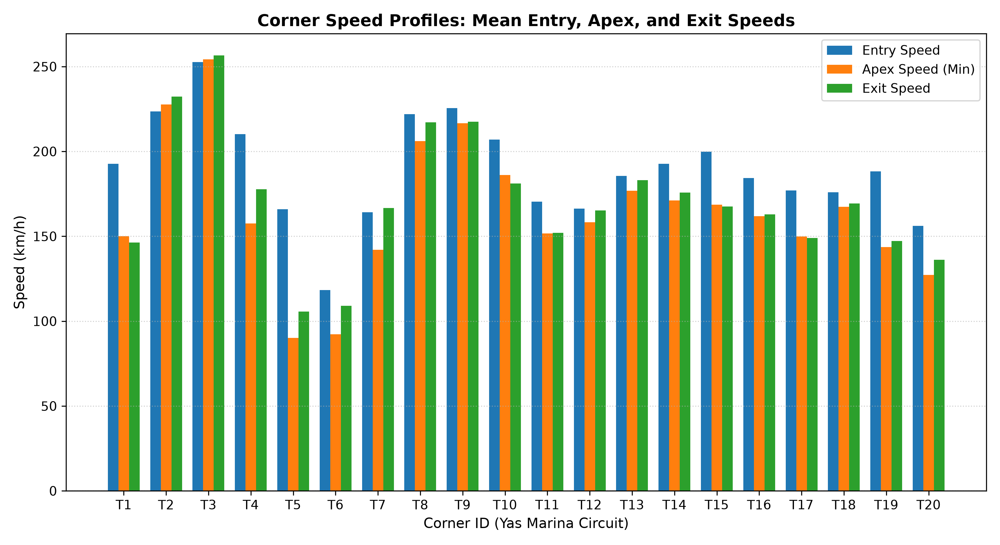
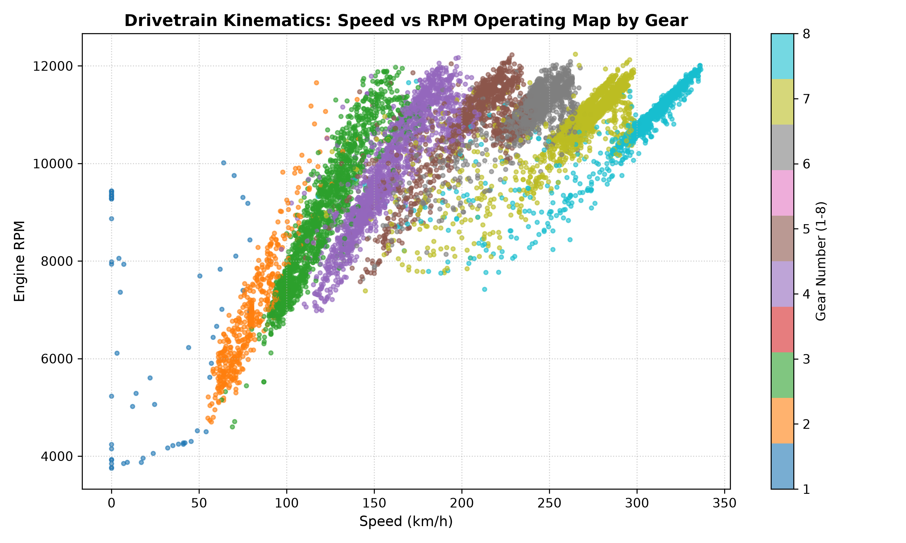
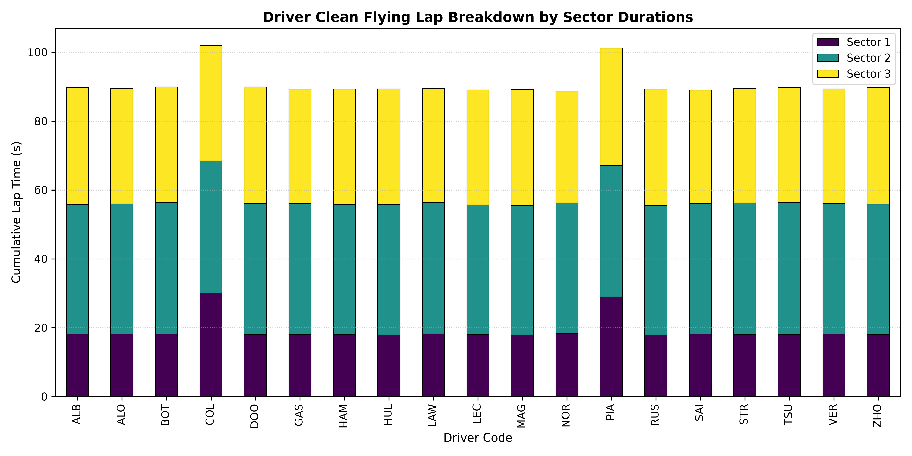

PHASE 6 VERIFIED 100% PASS RATE Track: Yas Marina Circuit (Abu Dhabi GP 2024)





| Analytical Query | SQL Engine | Pandas Reference | Tolerance | Validation Verdict |
|---|---|---|---|---|
| Clean Flying Laps Summary (Pace & Counts) | relational aggregate | in-memory groupby | ±0.001 s | EXACT MATCH |
| Sector Duration & Average Speeds | JOIN sectors + laps | DataFrame merge | ±0.001 s | EXACT MATCH |
| Corner Apex Speed Profiles | JOIN corners + laps | DataFrame merge | ±0.01 km/h | EXACT MATCH |
| Speed Trap Peak Velocity | SELECT MAX(speed) | Series.max() | ±0.01 km/h | EXACT MATCH |
| Braking Time & WOT Totals | GROUP BY driver_id | groupby agg | ±0.01 % / s | EXACT MATCH |
| Script | Query # | Statement Description | Result Rows | Execution Time (s) |
|---|---|---|---|---|
| 05_basic_analysis.sql | 1 | =============================================== | 58 | 0.0035 |
| 05_basic_analysis.sql | 2 | Query 2: Clean Flying Laps ranking by lap time | 38 | 0.0014 |
| 05_basic_analysis.sql | 3 | Query 3: Driver average flying lap pace with HA | 19 | 0.0011 |
| 05_basic_analysis.sql | 4 | Query 4: Categorizing cornering speeds using CA | 36 | 0.0022 |
| 05_basic_analysis.sql | 5 | Query 5: Telemetry dynamic regime distribution | 7 | 0.0573 |
| 06_joins_and_aggregations.sql | 1 | =============================================== | 38 | 0.0015 |
| 06_joins_and_aggregations.sql | 2 | Query 2: Team Performance Aggregation across al | 10 | 0.0013 |
| 06_joins_and_aggregations.sql | 3 | Query 3: Sector Breakdown JOIN with Driver Meta | 57 | 0.0020 |
| 06_joins_and_aggregations.sql | 4 | Query 4: Telemetry and Corner Kinematics JOIN f | 35 | 0.0024 |
| 07_cte_analysis.sql | 1 | =============================================== | 19 | 0.0020 |
| 07_cte_analysis.sql | 2 | Query 2: Sector-by-Sector Dominance Analysis us | 3 | 0.0027 |
| 07_cte_analysis.sql | 3 | Query 3: Multi-CTE Braking Intensity & Decelera | 19 | 0.0022 |
| 08_window_functions.sql | 1 | =============================================== | 38 | 0.0021 |
| 08_window_functions.sql | 2 | - | 50 | 0.0435 |
| 08_window_functions.sql | 3 | - | 50 | 0.0422 |
| 08_window_functions.sql | 4 | - | 50 | 0.0450 |
| 08_window_functions.sql | 5 | - | 590 | 0.0049 |
| 09_advanced_telemetry_analysis.sql | 1 | =============================================== | 19 | 0.1315 |
| 09_advanced_telemetry_analysis.sql | 2 | - | 85 | 0.0040 |
| 09_advanced_telemetry_analysis.sql | 3 | - | 57 | 0.0037 |
| 09_advanced_telemetry_analysis.sql | 4 | - | 40 | 0.0478 |
| 10_data_quality_checks.sql | 1 | =============================================== | 1 | 0.0594 |
| 10_data_quality_checks.sql | 2 | - | 1 | 0.0610 |
| 10_data_quality_checks.sql | 3 | - | 8 | 0.0912 |
| 10_data_quality_checks.sql | 4 | - | 5 | 0.0377 |
| 10_data_quality_checks.sql | 5 | - | 1 | 0.0016 |
| 10_data_quality_checks.sql | 6 | B. Sectors without matching Lap | 1 | 0.0010 |
| 10_data_quality_checks.sql | 7 | C. Corners without matching Lap | 1 | 0.0012 |
| 10_data_quality_checks.sql | 8 | D. Telemetry rows without matching Lap | 1 | 0.0511 |
| 10_data_quality_checks.sql | 9 | - | 4 | 0.0019 |